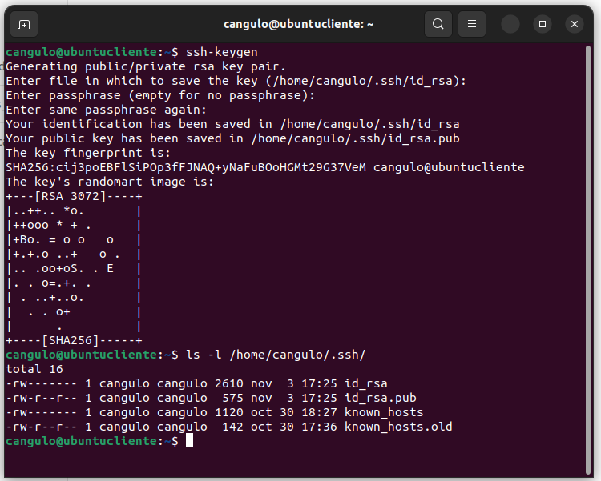
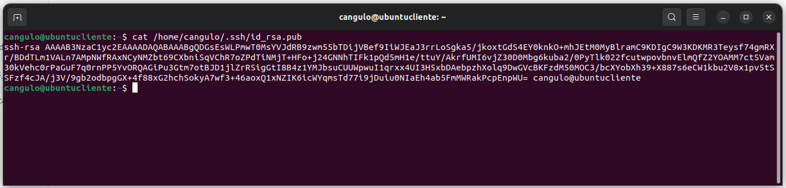
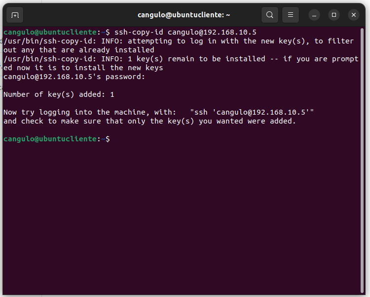
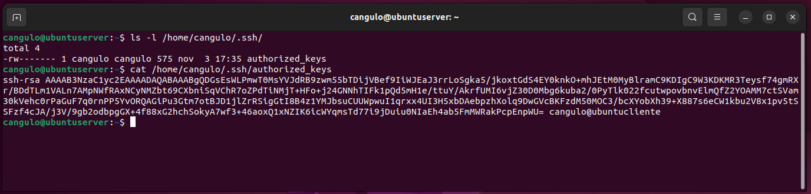
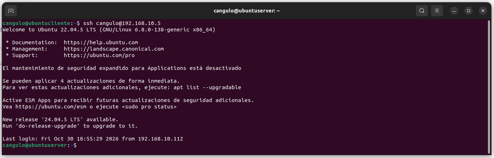
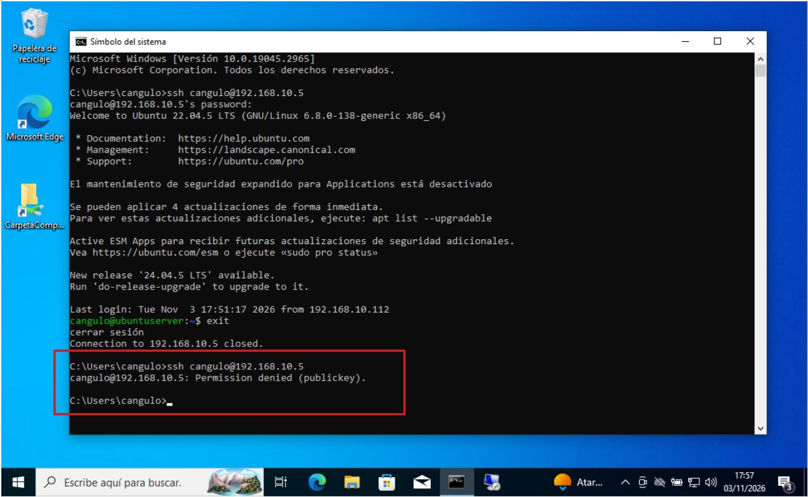

Actividad 11. SSH con autenticación por claves
Una forma alternativa al uso de usuario/contraseña para conectarnos por SSH es utilizar criptografía asimétrica basada en claves. Esta forma es mucho más segura ya que evitamos que las contraseñas puedan ser descubiertas si se utilizan contraseñas sencillas. Además permite no tener que introducir la contraseña cada vez que nos conectamos.
Además, vamos a configurar y utilizar el servicio de conexión por Escritorio Remoto a un servidor Ubuntu utilizando exclusivamente conexión con clave pública y clave privada. La conexión la realizaremos desde los clientes Windows y Ubuntu.
Servicio DNS activo
Para poder completar la actividad actual exitosamente deberás tener el servicio DNS del servidor Ubuntu operando adecuadamente
1. Configuración previa de los equipos
Para poder realizar la actividad adecuadamente debemos configurar las máquinas virtuales para que tengan la información correspondientes:
- Configurar la red NAT como
192.168.10.0/24y llamarlaRedNatServicios - Asignar a las máquinas virtuales la red Nat anterior.
- Asignar las siguientes configuraciones:
| Configuración | Servidor Ubuntu | Cliente Ubuntu | Cliente Windows |
|---|---|---|---|
| IP | 192.168.10.5 | 192.168.10.140 | 192.168.10.141 |
| IP servidor DNS | 192.168.10.5 | 192.168.10.5 | 192.168.10.5 |
2. Conexión utilizando claves SSH privada y pública
1.- Desde la máquina virtual del cliente Ubuntu vamos a generar el par de claves pública y privada. Desde la línea de comando ejecuta:
ssh-keygen
Configuración de keygen
- Deja que las claves generadas se almacenen por defecto en la carpeta
/home/<usuario>/.ssh - Para evitar tener que escribir siempre una clave, por defecto elige que no quieres elegir ninguna
passphrase.
2.- Entra en la carpeta /home/cangulo/.ssh y comprueba que tienes un fichero llamado id_rsa con la clave privada y otro llamado id_rsa.pub con la clave pública.

3.- Ejecuta cat para comprobar el contenido del archivo en el que guardas tu clave pública:
cat /home/cangulo/.ssh/id_rsa.pub

Capturas de pantalla
- Entrega una captura de pantalla con la creación del keygen
- Entrega otra captura de pantalla con el contenido de tu clave pública.
4.- Ahora vamos a copiar la clave pública al servidor SSH para identificarte sin necesidad de usar contraseña. Para ello ejecuta la siguiente instrucción:
ssh-copy-id cangulo@192.168.10.5
Parámetros de copia
cangulo→ nombre de tu usario en el servidor192.168.10.5→ IP de tu servidor Ubuntu- Cuando hagas la copia deberás indicar la contraseña de tu usuario Ubuntu

El fichero authorized_keys
Desde este momento en el servidor Ubuntu existe una copia de la clave pública de nuestro cliente en un fichero llamado authorized_keys. Podrían haber más de una clave pública dependiendo de la cantidad de usuarios que se hayan conectado al servidor Ubuntu.
Si se quiere evitar que un usuario pueda conectar al servidor, basta con eliminar la linea correspondiente al usuario del fichero authorized_keys
5.- Realiza una consulta del fichero authorized_keys ubicado en la siguiente ubicación dentro del servidor Ubuntu.
/home/cangulo/.ssh/authorized_keys

Capturas de pantalla
Realiza una captura de pantalla del contenido del fichero authorized_keys y conprueba que el contenido coincide con el del fichero id_rsa.pub de tu cliente.
6.- Es del momento de tratar de conectar de tu cliente ubuntu a tu servidor Ubuntu.
ssh cangulo@192.168.10.5
Conexión directa
¿Has tenido que indicar usuario y contraseña? ¿Por qué?
3. Forzando al servidor sólo conexiones con autenticación por claves
1.- Accede a ese archivo sshd_config y fíjate en las lineas PubkeyAuthentication y PasswordAuthentication:
/etc/ssh/sshd_config
Contesta a las preguntas
Por defecto, ¿está permitida la autenticación por claves? ¿Y por contraseña?
2.- Ahora vamos a forzar a que se use siempre la autenticación basada en claves. Para ellos modificamos el fichero sshd_config y actualizaremos los siguientes parámetros con los siguientes valores:
PubkeyAuthentication yes
PasswordAuthentication no
3.- Reinicia el servicio SSH.
sudo systemctl restart ssh
4.- Prueba a conectar desde tu cliente Ubuntu. Tienes que poder conectar sin que te pida clave.

5.- Prueba a conectar desde el terminal de tu cliente Windows. Verás que ya no te deja conectar.

Capturas de pantalla
- Entrega una captura de pantalla con la negación de la conexión con tu cliente Windows.
- Entrega una captura de pantalla con la conexión desde tu cliente ubuntu sin necesidad de indicar password